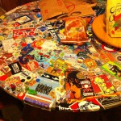
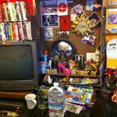

Mrs. Paperless’ private Erkundungstour
Das Fernweh hatte mich schon gepackt, der Flug nach San Francisco war gebucht und das in Kombination mit Meike Winnemuths Buch „Das grosse Los“. Der Keim der Reiselust blühte nach Verschlingen der Lektüre noch mehr auf. Neben wissen-aufsaugenden BoxWorks-Konferenztagen stromere ich deshalb nun noch durch diese lebhafte Stadt.
Es ist erstaunlich, wie viel ich hier in nur kurzer Zeit entdecke. Da wären z.B. die Radfahrer, die Polo spielen und das auf engstem Raum – spannend, aber bestimmt sehr verletzungsanfällig. Überhaupt ist dieser Stadtteil Mission ein sehr aufregendes Viertel.
Besonders gefallen haben mir die 19th Street und Valencia. Vor einem chinesischen Restaurant, das eher wie ein Imbiss aussah, hatte sich eine Schlange gebildet, also musste es ja gut sein. Meine Bestellung ging schnell, irgendetwas mit „pork and radish“, sehr gut gewürzt (siehe Foto). Dazu ein leckeres alkoholfreies Gingerbeer. Dumm nur, dass ich den genauen Namen des Gerichtes überlesen hatte – „pigs cheek“, also Schweinebacke mit lauwarmen Radieschen. Leider musste ich dieses Essen stehen lassen.
Aufgrund des Tipps in Winnemuths Buch besuchte ich auch den Sonntagsgottesdienst in der Coltrane Church. Obwohl Musik und Stimmung großartig waren, fanden sich leider nur wenige Gäste ein. Zwölf Musiker spielten eher jazzige Musik. Hier ein kleiner Eindruck:
Und von der Stepptänzerin inmitten des Raumes (Wahnsinnsgeschwindigkeit) erwartete ich fast einen Trancezustand. Auch fühlte ich mich sehr willkommen. Zwei junge Leute aus Kanada und Belgien stießen dazu und musizierten einfach mit. Plötzlich befand ich mich in einer Jam Session und das mitten in einer Kirche! Störend waren allerdings die Mengen an Weihrauch und Tabak, die den kleinen Raum einräucherten und mich etwas benommen an die frische Luft wanken ließen.
Auf dem Heimweg entdeckte ich durch Zufall ein sehr interessantes Geschäftsmodell. Das Reformhaus, http://www.rainbow.coop/, bietet ein überwältigendes Angebot an Gemüse, Obst (frisch und getrocknet), Getreidesorten, Tee, Kaffee, Öle und – typisch für Kalifornien – Nahrungsergänzungsmittel. Die hippen Kunden aller Altersklassen füllen sich alles selbst ab. Rainbow Grocery wäre definitiv mein Lieblingsmarkt, in dem ich stundenlang auch getrocknetes Seegras und Algen, Mandel-, Erdnuss- und Sesambutter erkunden würde.
Vegan ist hier ganz offensichtlich ein großer Trend, mit dem stark geworben wird und vegane Restaurants aus dem Boden schießen.
Und nun noch kurz zu meiner Unterkunft. Ich bin wirklich ein Fan von AirBnB. Allerdings müssen die dringend an einem verbesserten Qualitätscheck arbeiten. Gelinde gesagt ist die Wohnung, in der ich hier lebe, „eigenwillig bunt“:


Weitere Artikel

Gar nicht lean ist auch mal gut
Das schlanke, entschlackte, effiziente Büro ist meine Leidenschaft. Doch vor einiger Zeit habe ich erfahren, dass es manchmal gut ist, nicht lean zu sein, nicht auf die „schlanke Linie“ zu achten. Ich war eingeladen, einen …

Checkliste Reisen und Arbeiten
Immer wieder habe ich gemerkt, dass auf Reisen generell zu viel einpacke, dafür aber wichtige Kleinigkeiten, die das Leben wirklich leichter machen, gern mal vergesse. Da ich immer mehr Arbeiten und Reisen verbinde, kann das …